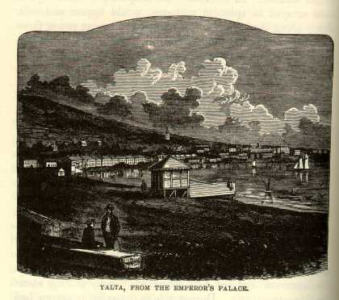

OdessaI have not felt so much at home for a long time as I did when I ''raised the hill" and stood in Odessa for the first time. It looked just like an American city; fine, broad streets, and straight as well; low houses, (two or three stories,) wide, neat, and free from any quaintness of architectural ornamentation; locust trees bordering the sidewalks (they call them acacias;) a stirring, business-look about the streets and the stores; fast walkers; a familiar new look about the houses and every thing; yea, and a driving and smothering cloud of dust that was so like a message from our own dear native land that we could hardly refrain from shedding a few grateful tears and execrations in the old time-honored American way. Look up the street or down the street, this way or that way, we saw only America! There was not one thing to remind us that we were in Russia. We walked for some little distance, reveling in this home vision, and then we came upon a church and a hack-driver, and presto! the illusion vanished! The church had a slender-spired dome that rounded inward at its base, and looked like a turnip turned upside down, and the hackman seemed to be dressed in a long petticoat without any hoops. These things were essentially foreign, and so were the carriages--but every body knows about these things, and there is no occasion for my describing them. We were only to stay here a day and a night and take in coal; we consulted the guide-books and were rejoiced to know that there were no sights in Odessa to see; and so we had one good, untrammeled holyday on our hands, with nothing to do but idle about the city and enjoy ourselves. We sauntered through the markets and criticised the fearful and wonderful costumes from the back country; examined the populace as far as eyes could do it; and closed the entertainment with an ice-cream debauch. We do not get ice-cream every where, and so, when we do, we are apt to dissipate to excess. We never cared any thing about ice-cream at home, but we look upon it with a sort of idolatry now that it is so scarce in these red-hot climates of the East. |